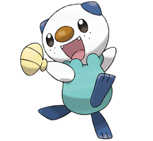

Pokemon's Iniciales
|
Un Pokémon inicial (Starter Pokémon en inglés) es el Pokémon con el que un entrenador comienza su aventura. Muchos entrenadores prefieren tener en su equipo dicho Pokémon porque con él establecen una importante relación de amistad y confianza, o porque creen que es el mejor Pokémon para su aventura.
Sus tipos están equilibrados unos de otros, por ejemplo el tipo agua derrota al tipo fuego, el tipo fuego derrota al tipo planta y el tipo planta derrota al tipo agua.
|
|
En general el protagonista siempre recibe su primer Pokémon como regalo del profesor local, aunque hay excepciones: en el anime muchos entrenadores con los que Ash se encuentra cuentan que su primer Pokémon lo heredaron, se les unió como mascota o lo capturaron salvaje por ellos mismos. En los videojuegos para combatir contra un Pokémon siempre se necesita otro Pokémon, pero hay personajes que se enfrentan ellos mismos contra Pokémon salvajes, como el profesor Oak contra Pikachu al principio de Pokémon Amarillo y el señor de Ciudad Verde que te enseña como capturar un Weedle en Pokémon Rojo y Pokémon Azul, Pokémon Rojo Fuego y Pokémon Verde Hoja, o un Rattata en Pokémon Amarillo.
Los iniciales y sus evoluciones de las regiones de Kanto, Johto, Hoenn, Sinnoh, Teselia y Kalos poseen las habilidades:
- Espesura para los de tipo planta.
- Mar llamas para los de tipo fuego.
- Torrente para los de tipo agua.
En los videojuegos
|
En la mayoría de los videojuegos, al obtenerlos los Pokémon iniciales están en el nivel 5, con dos movimientos: uno que causa daño al oponente (placaje, arañazo, destructor) y otro que disminuye el ataque o defensa del objetivo (gruñido, látigo, malicioso) o aumenta el ataque o la defensa del usuario (refugio). Generalmente, los entrenadores pueden elegir entre un Pokémon de tipo planta, agua o fuego, estableciendo una relación circular de ventajas y desventajas entre los tres tipos (Planta > Agua; Fuego > Planta; Agua > Fuego). El rival siempre escoge el Pokémon de tipo ventajoso contra el tuyo.
|
 |
Iniciales de Kanto
En Pokémon Rojo, Azul, Verde,Amarillo, Rojo Fuego y Verde Hoja, el Profesor Oak lleva a los entrenadores a su laboratorio antes de que se sumerjan en la hierba y les da a escoger los siguientes Pokémon:
| Bulbasaur |
Charmander |
Squirtle |
Pikachu |
 |
 |
 |
 |
| Planta / Veneno |
Fuego |
Agua |
Electrico |
El rival entonces escogerá el Pokémon de tipo que tiene ventaja sobre el tuyo y el inicial restante se quedará en la Poké Ball sobre la mesa del Profesor Oak durante todo el juego y ni tú ni ningún otro personaje del juego lo podrá coger, aunque, en las versiones beta de los videojuegos Pokémon Rojo, Pokémon Verde y Pokémon Azul para enfrentarte a Mewtwo tenías que pelear antes contra el profesor Oak, que tenía en su equipo al Pokémon inicial restante (El cuál está en desventaja frente al tuyo) que él mismo había entrenado.
Iniciales de Johto
En Pokémon Oro, Plata, Cristal, Oro HeartGold y Plata SoulSilver el Profesor Elm hará entrega a los entrenadores de tres Pokémon
| Chikorita |
Cyndaquil |
Totodile |
 |
 |
 |
| Planta |
Fuego |
Agua |
Tras obtener la Pokédex del Profesor Oak, el Profesor Elm te llama para decirte que han robado uno de los 2 Pokémon restantes. Al volver a Pueblo Primavera, el jugador se encuentra con el ladrón que se convierte en su rival durante el resto del juego, Plata. El rival habrá robado el Pokémon de tipo con ventaja al tuyo. El tercer Pokémon se quedará en el laboratorio del Profesor Elm. Este es el único trío inicial en el que los tres Pokémon y sus correspondientes evoluciones mantienen el tipo puro.
Iniciales de Hoenn
En Rubí, Zafiro y Esmeralda deberás rescatar al Profesor Abedul del ataque de un Poochyena (o de un Zigzagoon si es en Esmeralda). Para ello, tendrás que elegir uno de sus tres Pokémon que tiene en su mochila:
| Treecko |
Torchic |
Mudkip |
 |
 |
 |
| Planta |
Fuego |
Agua |
El vecino/a del jugador, aunque elige el Pokémon que tiene ventaja sobre el tuyo, no es el verdadero rival, sino que lo es Blasco, cuyo primer Pokémon es Ralts. Aunque igual tendrás que pelear algunas veces con el personaje que eligió tu Pokémon contrario.
Iniciales de Sinnoh
En Pokémon Diamante, Perla y Platino, tendrás la opción de elegir a Piplup, Turtwig y Chimchar. Cuando vayas a la hierba alta junto a tu rival a coger el maletín del Profesor Serbal en el Lago Veraz y un dúo de Starly los ataquen.
| Turtwig |
Chimchar |
Piplup |
|
|
|
| Planta |
Fuego |
Agua |
Luego, el Profesor te lo regalará en su laboratorio en Pueblo Arena. Perla escogerá el que tiene ventaja y León o Maya escogerá el que tenga debilidad. Por ejemplo, si escoges a Turtwig, tu rival escogerá a Chimchar y Maya/León escogerá a Piplup, siempre siguiendo el triángulo Planta-Fuego-Agua.
En Pokémon Platino, sin embargo, mientras te diriges a Pueblo Arena para obtener tu Pokémon inicial, al llegar a la hierba alta, el Profesor Serbal aparecerá y te detendrá. Tras preguntarte sobre tus intenciones como entrenador y el cuidado que dedicarás a los Pokémon, decide confiar en ti y te da a elegir un Pokémon inicial de su maletín. La misma mecánica que en Diamante y Perla se repetirá. El rival escogerá el Pokémon con ventaja sobre el tuyo, y Maya o León se quedará con el que no tenga ventaja.
Iniciales de Teselia
En Pokémon Negro, Blanco, Negro 2 y Blanco 2 se da la opción de elegir entre Oshawott, Snivy y Tepig.
| Snivy |
Tepig |
Oshawott |
|
 |
 |
| Planta |
Fuego |
Agua |
En la introducción de Pokémon Negro y Blanco se muestra como la Profesora Encina entra en nuestra casa. Luego te encuentras en tu habitación junto con Cheren y frente sobre una mesa hay un regalo y después entra Bel a la habitación y tienes que abrir el regalo y te aparece la opción de elegir a Snivy, Tepig o Oshawott. Ten en cuenta que luego de elegir, Bel elegirá el que está en desventaja al tuyo y Cheren el que tiene ventaja.
En Pokémon Negro 2 y Blanco 2 al comenzar tu aventura Pokémon lo primero que harás en estos juegos es ir al mirador ubicado hacia el Norte de Ciudad Engobe, la ciudad natal de nuestro personaje, también es aquí donde vive nuestro rival Matís. Es aquí donde Bel te entregará tu Pokémon inicial, lo hará ella como favor de parte de la Profesora Encina, te lo entregará junto a Matís. El rival no escoge un Pokémon de la profesora, sino que tiene el inicial con ventaja desde que era pequeño, sea cual sea tu opción.
Iniciales de Kalos
Los nuevos Pokémon iniciales son entregados por Benigno en Pueblo Acuarela. Se puede elegir entre Chespin, Fennekin y Froakie. Xana elegirá al Pokémon cuyo tipo es más débil frente al que has elegido mientras que Kalm/Serena escogerá al que es más eficaz contra el tuyo.
| Chespin |
Fennekin |
Froakie |
|
 |
 |
| Planta |
Fuego |
Agua |
Si lo desea presione en la figura de algun pokemon para abrir su paguina (En la Imagen de Abajo):